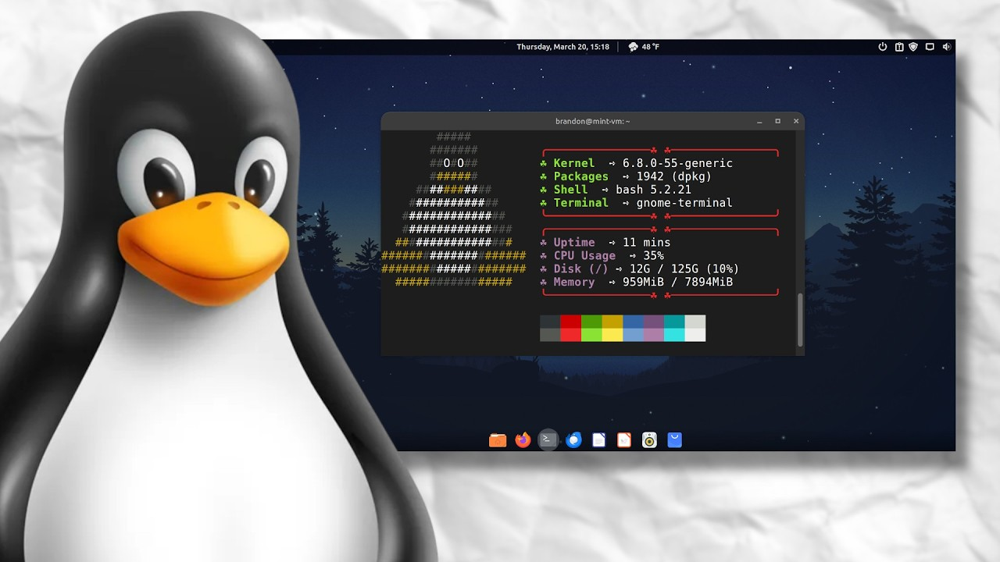

Linux

- Organizes files and folders in a hierarchical structure.
- Uses a single root directory "/", from which all folders branch.
- Paths use forward slashes, for example "/home/user/file.txt".
- Case-sensitive (e.g., "File.txt" and "file.txt" are different).
- Cannot use the forward slash "/" in file names.
- Filenames can contain most other characters, including spaces.
- Common file systems include ext4, ext3, ext2.
- Also supports FAT32 and exFAT for external drives.
- FAT is still used in removable media and embedded systems.
- No specific extension is required for executables.
- Common script types: .sh, .py, .bin, .run.
- Files must have executable permissions set (e.g., chmod +x).
- Uses Terminal to run commands and scripts.
- Default shells include bash, zsh, or sh.
- Scripts are run with ./script.sh or using interpreter (e.g., bash script.sh).
Directory Structure
Naming Conventions
File Systems
Executable File Types
Script Execution
MacOS
- Organizes files in a hierarchical structure similar to Linux.
- Uses a single root directory "/", branching into folders like /Applications, /Users, /System.
- Paths use forward slashes, for example "/Users/username/Documents".
- Not case-sensitive by default, but can be configured to be case-sensitive.
- Cannot use the colon ":" in file names.
- Allows most characters and supports long file names.
- Uses APFS (Apple File System) by default.
- Also supports HFS+, FAT32, and exFAT for compatibility.
- FAT is used for external drives and shared devices.
- Executables do not require specific extensions.
- Common script types: .command, .sh, .py.
- Files need execute permission set (e.g., chmod +x).
- Uses the Terminal app to access the shell environment.
- Default shell is zsh (formerly bash).
- Scripts are run using ./script.sh or with an interpreter like bash or python.
Directory Structure
Naming Conventions
File Systems
Executable File Types
Script Execution
Windows

- Organizes files and folders in a hierarchical
- A disk designator with a backslash, for example "C:\" or "d:\".
- A single backslash, for example, "\directory" or "\file. txt".
- Not case-sensitive
- Cannot use characters like \ / : * ? " < > |
- Reserved names like CON, AUX, NUL not allowed.
- Uses NTFS, FAT32, and exFAT.
- FAT used in older systems and USB devices.
- .exe: Main executable file type.
- .bat: Batch script file, runs in Command Prompt (CMD).
- .msi: Microsoft Installer Package.
- .ps1: PowerShell script file.
- CMD (Command Prompt): Older shell for .bat and .cmd files.
- PowerShell: Modern shell for .ps1 scripts; supports advanced scripting
and automation. - Windows Terminal: Unified shell for CMD, PowerShell, and
WSL (Windows Subsystem for Linux).
Structure
Naming Conventions
File Systems
Executable File Types